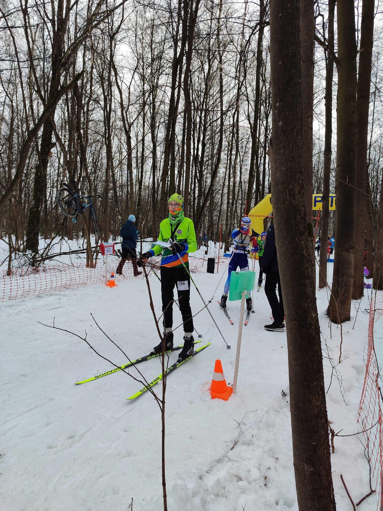
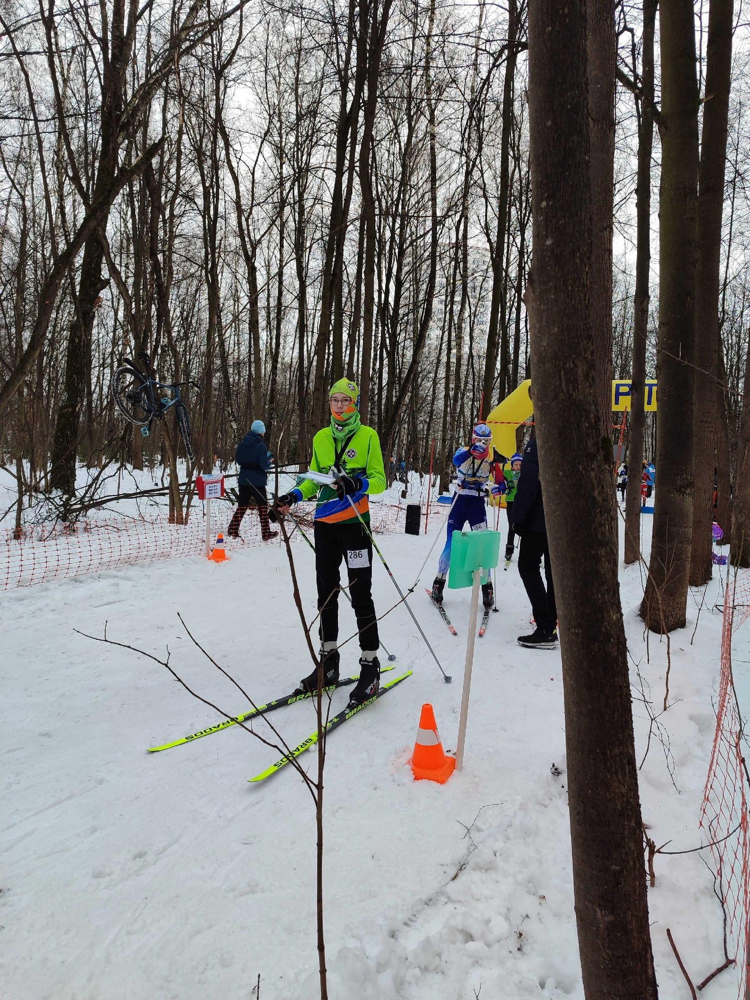
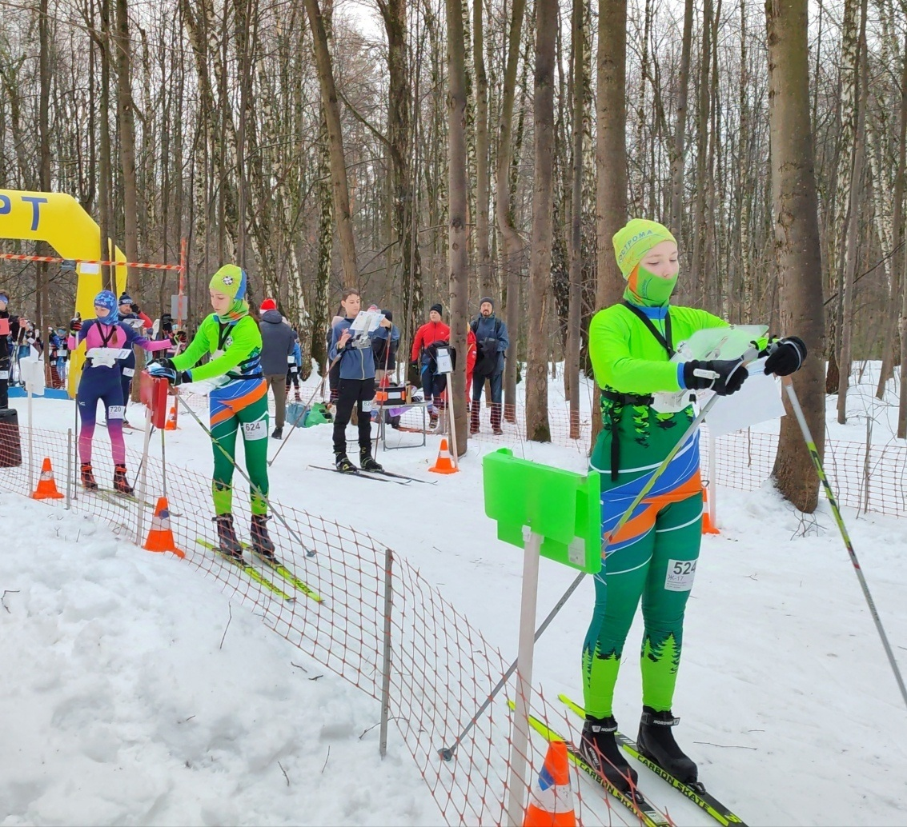
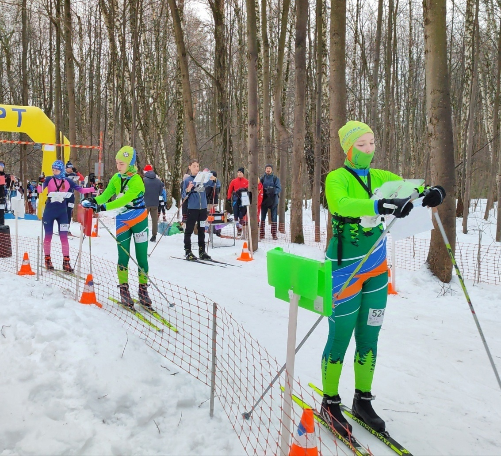
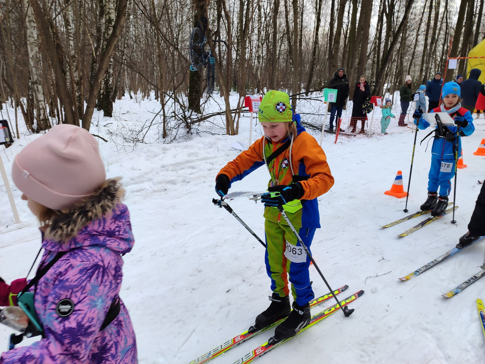
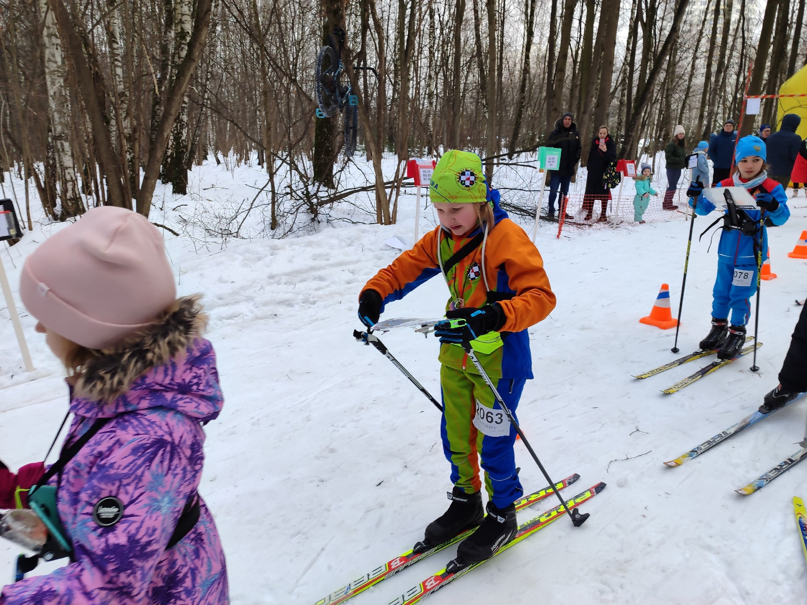

29 декабря 2024
28 и 29 декабря 2024 года в Москве прошли Всероссийские спортивные соревнования по спортивному
ориентированию «НОВОГОДНИЕ СТАРТЫ».
В программу соревнований вошли две лыжные гонки: спринт и классика.
«Прекрасное завершение спортивного 2024 года в Москве на Всероссийских соревнованиях." Ребята старались, но
конкуренция была очень большая.
М12
Мохов Максим в первый день не уложился в КВ, зато второй день 62 место
Нечаев Максим в первый раз не уложился в КВ, а второй раз потеря чипа не дала возможность узнать свои силы.
М13
Семёнов Игорь 35 и 31 места
М14
Набатов Семён 55 и 53 места
Кабанов Егор увы снят и 43 место
М15
Смирнов Владимир 22 и 17 места
Торопынин Тимофей 21 место и как жаль, что вышла поломка лыжи во второй день
Кудашев Сергей 13 и 12 места
Баринов Егор 15 и 14 места
М17
Жучков Иван 58 и во второй день один КП не пикнул
Ж14
Смирнова Анастасия 22 и 26 места
Ж17
Шапошникова Дарья 30 и 29 места
О4
Изотова Елизавета в первый день растерялась, потерялась, но вернулась, поэтому плохая отметка, второй день
78 место из 128 человек.
Итог: ещё больше надо тренироваться выезжать, и если зимние соревнования брать запасные столики.
А так замечательно, в канун Нового года посоревновались, а затем попробовали свои силы на Московском катке на
ВДНХ.

 

 



 
